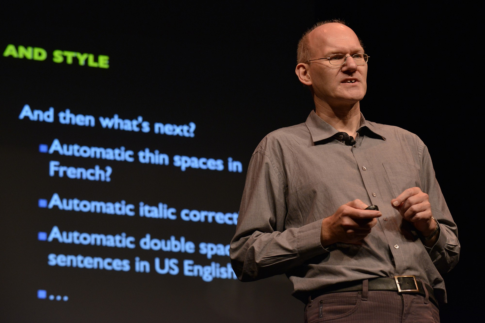

É um cientista informático conhecido pelo desenvolvimento do Argo, um navegador web que ele desenvolveu como aplicativo de teste para sua proposta de folha de estilo.
Vida e trabalho

Nascido em Haia, a Bos estudou matemática na Universidade de Groningen e escreveu sua tese de doutorado no desenvolvimento rápido da interface do usuário com a linguagem de script Gist.
Em 1996, ele se juntou ao World Wide Web Consortium (W3C) para
trabalhar em Cascading Style Sheets (CSS).
Ele é um ex-presidente e o atual contato do pessoal do W3C do Grupo de Trabalho do CSS.